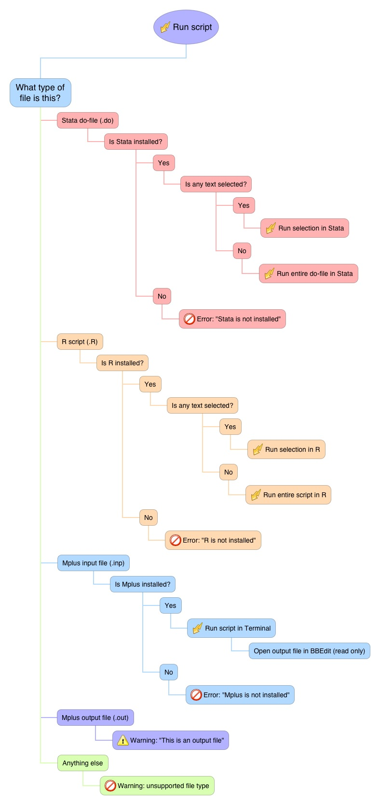

Tools for using BBedit with R, Stata and Mplus.
View the Project on GitHub ewancarr/Analysis.bbpackage
Tools for using BBEdit with R, Stata and Mplus.
Run analysis in BBEdit.applescript
This runs the current BBEdit file in Mplus, R or Stata, depending on the file extension.
